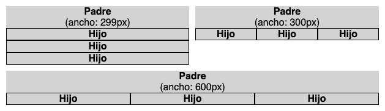

calc
calc permite trabajar con las cuatro operaciones aritméticas básicas (suma, resta, división y multiplicación), de la misma manera que podríamos hacerlo con pre-procesadoress como Sass o Less. Sin embargo, calc tiene una importante ventaja:
Permite utilizar varios tipos de unidades, dentro de una misma operación, incluyendo:
A continuación, veremos un compendio de técnicas que nos permitirán exprimir las capacidades de calc, más allá de las operaciones básicas:
Para que el tamaño de fuente sea mayor, cuanto mayor sea el tamaño de la pantalla, podemos utilizar la siguiente fórmula:
/* font-size: calc(tamañoFuenteMínimo + tamañoFuenteVariable) */
font-size: calc(16px + 3vw )
Donde tamañoFuenteVariable lo expresamos como una unidad que se computa por el 3% del ancho de la ventana del navegador (100vw sería el 100% del ancho de la ventana).
| Ancho de la ventana | font-size resultante |
|---|---|
| 100px | 16px + 3px |
| 1000px | 16px + 30px |
Por tanto, a mayor tamaño de pantalla, aprovechamos que hay más espacio disponible para hacer el texto más legible, aumentado el tamaño de letra.
Si necesitamos un control más fino sobre el tamaño de la fuente, por ejemplo para especificar saltos de tamaño de texto entre determinados anchos de pantalla, podemos utilizar una fórmula más compleja:
/* font-size: calc(tamañoFuenteMínimoPX + (tamañoFuenteMáximo - tamañoFuenteMínimo) * ((100vw - anchoPantallaMínimoPX) / (anchoPantallaMáximo - anchoPantallaMínimo))) */
font-size: calc(12px + (24 - 12 ) * ((100vw - 400px ) / (800 - 400 )));
Para el interlineado, el valor base recomendado suele ser apróximadamente 1.5 (sin unidad). El problema es que a tamaños de fuente grandes, se produce un interlineado excesivo, por lo que deberemos ir reduciendo el interlineado progrevisamente, hasta un valor aproximado de 1.1
https://codepen.io/supersimplenet/pen/RwWyjKV
Sin embargo, podemos utilizar calc para obtener un alto de línea dinámico, en función del tamaño de la tipografía, sin necesidad de ir retocando manualmente el valor de line-height con cada cambio de font-size.
Para encontrar la fórmula que generará este interlineado dinámico, veamos los números de nuestro ejemplo:
| line-height: 1.5 | line-height: 1.1 | |
|---|---|---|
| font-size: 10px | 15px | |
| font-size: 50px | 55px |
Los valores tachados, indican interlineados visualmente demasiado grandes, o demasiado pequeños.
Según los datos de la tabla, para obtener un interlineado óptimo necesitaremos acercanos lo máximo posible a 15px en tamaños de fuente pequeños, y 55px en fuentes más grandes.
En realidad, el valor de 11px ya está bastante cerca de 15px. ¿Y si añadiésemos al valor 1.1 sólo unos pocos píxeles?
line-height: calc(2px + 1.1 + 2px)Veamos de nuevo la tabla comparativa, añadiendo los resultados obtenidos con la fórmula:
| line-height: 1.5 | line-height: (2px + 1.1 + 2px) | line-height: 1.1 | |
|---|---|---|---|
| font-size: 10px | 15px | 15px | |
| font-size: 50px | 59px | 55px |
Parece que a tamaños de fuente grandes, nuestra fórmula también es válida, ya que aproxima bastante el valor obtenido (59px) al valor visualmente óptimo (55px).
Desafortunadamente, line-height: calc(2px + 1.1 + 2px) es CSS inválido, ya que calc no permite mezclar valores con y sin unidad.
Sin embargo, podemos echar mano de la unidad ex, que responde al alto de la letra "x" de la fuente en uso, para obtener un valor similar a 1.1
Como puedes ver en el siguiente ejemplo, un valor de 2ex funciona bastante bien con fuentes muy diversas:
https://codepen.io/supersimplenet/pen/vYNjaem
Por tanto, aunque tengamos que ajustarla un poco, según la fuente utilizada, la siguiente fórmula parece un buen punto de partida:
/* line-height: calc(margenExtra + alturaDinámica + margenExtra) */
line-height: calc(2px + 2ex + 2px )
Imagina que tienes un elemento Padre, con varios elementos Hijo, que quieres disponer según estas condiciones:
Veamos estas condiciones, más claramente, en un diagrama:
No podríamos utilizar media queries, ya que aplican sobre el tamaño de la ventana del navegador, no sobre el tamaño de un elemento en particular (en nuestro caso, el elemento Padre).
Afortunadamente, haciendo uso de las propiedades flexbox, y un pequeña fórmula, podremos solucionar el problema, sólo con CSS:
.padre {
/* Hace flexibles a los elementos hijo */
display: flex;
/* Permite que los elementos hijo se apilen verticalmente, si es necesario * /
flex-wrap: wrap;
}
.hijo {
/* Hace que los elementos hijo ocupen todo el ancho disponible */
flex-grow: 1;
/* Esta es fórmula, que usamos a modo de "container query" */
flex-basis: calc((300px - 100%)) * 9999);
}Diseccionemos nuestra formula:
300px actúa como nuestro breakpoint, el punto a partir del cual los elementos Hijo pasarán de distribuirse verticalmente, a hacerlo horizontalmente.100% se computará siempre como el ancho del elemento Padre correspondiente.
9999 es un multiplicador, que utilizaremos para obtener un resultado de mayor magnitud.
Por tanto:
(300px - 301px) * 9999 = -9999px
(300px - 299px) * 9999 = 9999px
(300px - 300px) * 9999 = 0px
De esta manera, obtenemos un valor interruptor de 3 posiciones (negativo, positivo y cero) que cambiará dinámicamente, en función del ancho del elemento Padre.
Una vez hecho nuestro cálculo, aprovecharemos las peculiaridades de flex-basis, para obtener la maquetación dinámica que queremos:
auto. A efectos de nuestro ejemplo, consideraremos que flex-basis: auto se comporta igual a flex-basis: 0.
flex-wrap: wrap, haciendo que los elementos Hijo se apilen verticalmente.
Una técnica similar, aplicando un valor interruptor dinámico,
Existe otra técnica similar, que aplica el mismo valor interruptor a las propiedades width, min-width y max-width, en lugar de a flex-basis.
Utilizando un interruptor, de manera similar a la técnica anterior, combinado con variables CSS, podemos generar condicionales en nuestros estilos.
:root {
--interruptor: 0;
}
.interruptor-activado {
--interruptor: 1;
}
.elemento {
padding: calc(
1px * (1 - var(--interruptor)) +
10px * var(--interruptor)
);
}
De este modo, .elemento tendrá padding: 1px, mientras que .elemento.interruptor-activado tendrá padding: 10px
Obviamente, se trata de un ejemplo muy simple, que podría conseguirse de manera mucho más sencilla:
.elemento {
padding: 1px;
}
.elemento.interruptor-activado {
padding: 10px;
}
De todos modos, es una técnica interesante que podemos tener en nuestro arsenal, para utilizarla en situaciones donde nos sea más útil.